Início | Personagens | Compilados |
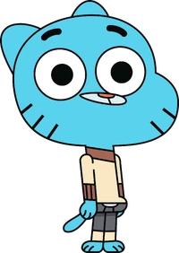
Gumball Watterson, protagonista do desenho
Gumball (anteriormente Zach) Tristopher Watterson é o protagonista de O Incrível Mundo de Gumball. Ele é um gato azul de 12 anos de idade que estuda na Escola de Elmore com seu irmão adotivo de dez anos de idade, chamado Darwin e sua irmã gênio de apenas quatro anos de idade chamada Anais.
Gumball estuda na Classe da Senhorita Símio. Desde o início da série, Gumball sempre teve uma queda por uma garota chamada Penny, que também estuda na sua mesma classe, e partir de "A Casca", os dois estão namorando.
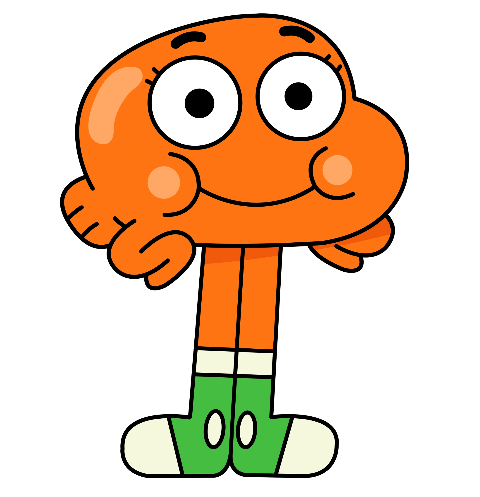
Darwin Watterson, irmão de Gumball e também protagonista do desenho
Darwin Raglan Caspian Ahab Poseidon Nicodemius Watterson III mais conhecido como Darwin, é o deuteragonista de O Incrível Mundo de Gumball. Ele costumava ser o peixe de estimação de Gumball, mas um dia cresceram pernas nele pelo amor de Gumball Watterson , ele ganhou a habilidade de falar e se adaptou a vida fora da água e assim a Família Watterson decidiu adotá-lo.Ele estuda com seus irmãos Gumball e Anais na escola de Elmore Junior High.Ele tem uma queda pela Carrie, eles começaram a namorar em O Cupido.
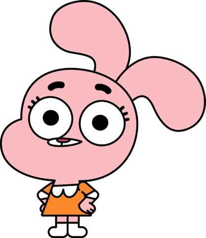
Anais Watterson, irmã gênio de Gumball e também protagonista do desenho
Anais Errrrrr Watterson é uma das principais personagens de O Incrível Mundo de Gumball. Ela é o membro mais jovem e mais inteligente da família Watterson. Apesar de ter apenas quatro anos de idade, ela estuda na Escola de Elmore, com seus irmãos mais velhos, Gumball e Darwin.
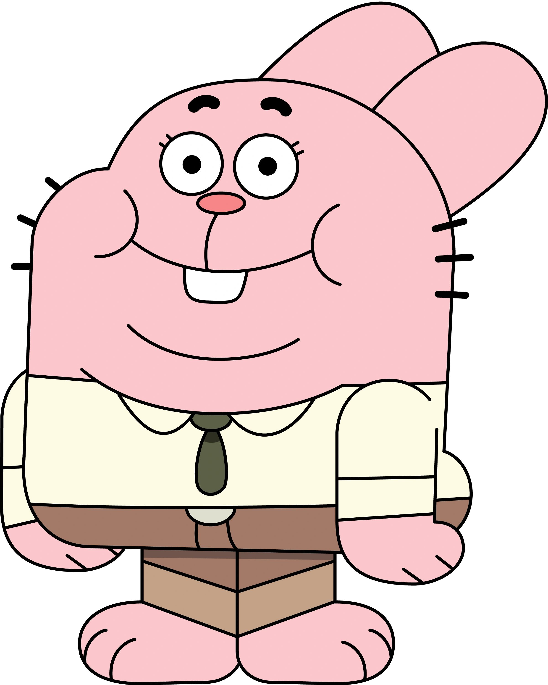
Ricardo Watterson, pai de Gumbaall e um dos protagonistas do desenho
Ricardo/Richard Buckley Watterson é um dos principais personagens de O Incrível Mundo de Gumball. Ele é o pai de Gumball e Anais, pai adotivo do Darwin e marido de Nicole. Ricardo é extremamente estúpido e nem é um bom exemplo para seus filhos. Apesar de seus conselhos equivocados, ele tem boas intenções e ama sua família igualmente. Embora, ele mencionou que Darwin é o seu favorito, mas ele negou para evitar machucar os sentimentos de alguém, dizendo que ele é seu peixe favorito no lugar.
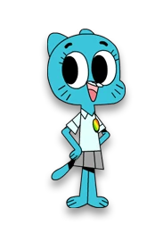
Nicole Watterson, mãe de Gumball e uma das protagonistas do desenho.
A Dra. Nicole Watterson ( nascida Senicourt ) é uma das personagens principais de O Incrível Mundo de Gumball . Nicole é a mãe da família Watterson e o pilar e único membro verdadeiramente responsável da família. Ela é muito dedicada à sua família e faria qualquer coisa ao seu alcance para mantê-los confortáveis e seguros.
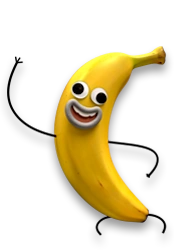
João Banana, amigo de Gumball e um dos personagens mais amados do desenho.
Joseph "João" Banana é o bobão da turma na escola que Gumball frequenta. Quando ele conta suas piadas, ele acha que as pessoas estão rindo com ele, quando eles estão realmente rindo dele.
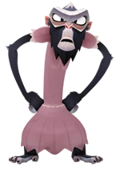
Senhorita Símio, professora de Gumball e uma das personagens mais odiadas do desenho.
Senhorita Lucy Símio é uma personagem recorrente e uma antagonista de O Incrível Mundo de Gumball. Ela dá aula na Escola de Elmore desde a Idade da Pedra. Ela despreza absolutamente Gumball e faz de tudo para arruinar seus planos. Ela também é a namorada do Diretor Brown.
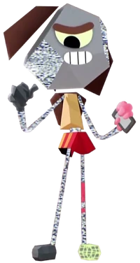
Rob, arqui-inimigo de Gumball e maior antagonista do desenho.
Rob é o Vilão principal e personagem recorrente em O Incrível Mundo de Gumball. Ele é um ex-aluno da Escola de Elmore, e foi visto pela primeira vez em um cartaz da série publicado online. Ele é agora o arqui-inimigo do Gumball, e o antagonista pricomsérie.
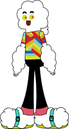
Senhor Pequeno, um dos professores de Gumball e um dos personagens mais engraçados da série.
Sr. Steve Pequeno é um personagem recorrente de O Incrível Mundo de Gumball. Ele é o orientador da Escola de Elmore. Embora o seu trabalho seja aconselhar e orientar os alunos, ele tende a agir como aquele que precisa de mais ajuda.
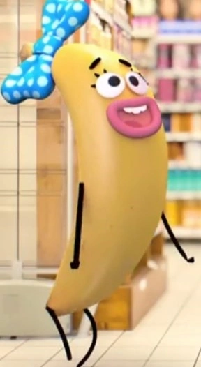
Bárbara Banana, mãe de João Banana e uma das personagens mais poderosas e misteriosas do desenho.
Bárbara Banana é uma personagem secundária de O Incrível Mundo de Gumball. Ela é a mãe do João Banana e esposa do Bob Banana. Ela e seu marido apareceram pela primeira vez em "O Responsável".
Ela tem a capacidade de tudo que pintar se torna realidade, fazendo-a uma das personagens mais poderosas do desenho.
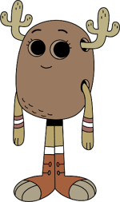
Penny antes
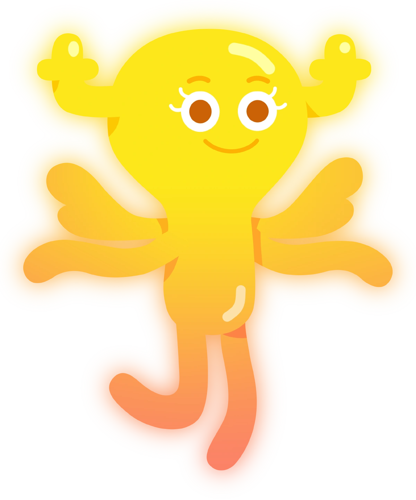
Penny depois de sair de sua casca
Penny, namorada de Gumball e uma das personagens mais queridas do desenho.
Penelope "Penny" Fitzgerald é uma personagem recorrente de O Incrível Mundo de Gumball. Penny é uma fada metamórfica que vivia em uma casca de amendoim como disfarce. Ela estuda na classe da Senhorita Símio na Escola de Elmore. Ela e Gumball sempre gostaram um do outro, mas tinham dificuldade em se expressarem até o episódio "A Casca", onde ela se libertou de sua casca de amendoim, e Gumball confessou seus sentimentos e a beijou. Ela era uma das Meninas da Casa da Árvore, mas o grupo acabou após a árvore ser cortada por Tobias e João Banana. Ela é uma das Líderes de Torcida na escola.